DeepFashion-MultiModal 12,694장에 대해 24-class 파싱, 21 키포인트, 26-dim 속성을 단일 모델로 동시 예측하는 3-태스크 멀티태스크 모델을 구축하고,
SegFormer-B3와 DeepLabV3+ ResNet-101을 동일한 학습 조건에서 비교 평가하였다.
패션 이미지에서 픽셀 단위 의류 영역 분할(파싱), 인체 관절 위치 추정(키포인트), 의류 속성 분류를 단일 모델로 동시에 수행한다.
DensePose annotation 미사용 : DeepFashion-MultiModal에 DensePose surface 좌표 맵도 제공되지만, 본 프로젝트의 메인 태스크인 24-class parsing이 이미 픽셀 단위 정답을 직접 제공하므로 입력은 RGB 3채널로 단순화했다.
| 출처 | DeepFashion-MultiModal |
| 원본 이미지 | 44,096장 (750×1101 RGB, 고해상도 전신) |
| 정밀 파싱 마스크 | 12,701장 (전신 컷에만 24-class annotation) |
| 키포인트 | 12,702장 (21 keypoints + visibility 0=visible / 1=occluded / 2=missing) |
| 속성 라벨 | 42,544건 (Shape 12 + Fabric 7 + Pattern 7 = 26-dim multi-label) |
| 모델 입력 크기 | 512×384 (가이드 표준) |
| 모델 출력 (3-Head) | parsing [B, 24, H, W] / keypoint [B, 21, 3] / attribute [B, 26] |
| Modality | 보유 | 누락 (이미지 기준) |
|---|---|---|
| 이미지 (.jpg) | 44,096 | — |
| 파싱 마스크 (*_segm.png) | 12,701 | 31,395 |
| 키포인트 (loc + vis) | 12,702 | 31,394 |
| 속성 (shape + fabric + pattern) | 42,544 | 1,552 |
| ∩ 4-modality 교집합 | 12,694 ★ | — |
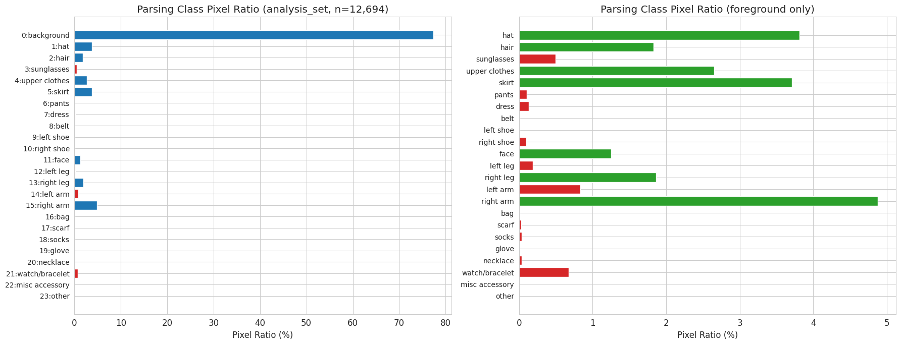
→ mIoU는 24 클래스 평균이므로 소수 클래스가 학습 못 받으면 평균이 끌어내려진다. 실제로 학습 후 bag/socks/rompers/eyewear 4개 클래스가 정확히 IoU=0.0000으로 나타나 mIoU −0.167 견인했다.
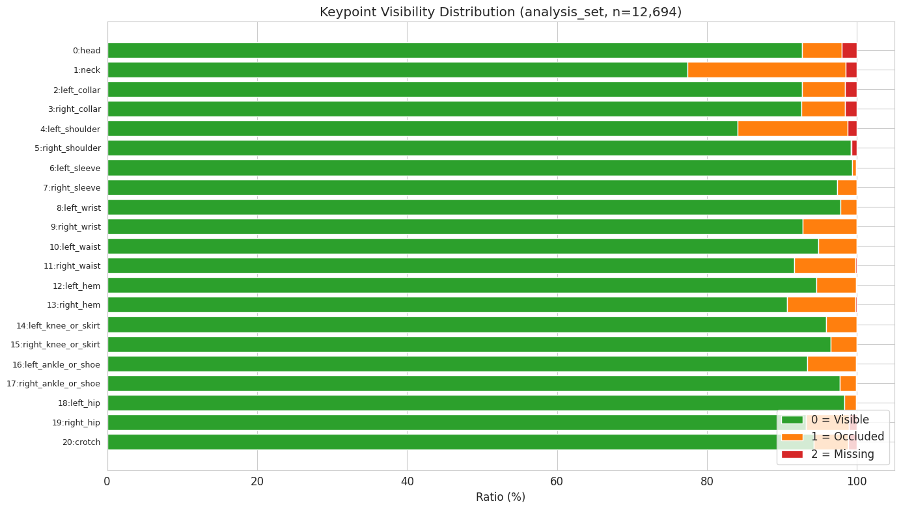
→ 각 keypoint에는 visibility 값 0/1/2가 함께 라벨링되어 있고, 값에 따라 학습 loss와 평가 PCK에 어떻게 쓸지가 달라진다.
| visibility | 의미 | 학습 loss | 평가 PCK |
|---|---|---|---|
| 0 | visible — 그대로 잘 보임 | ✅ 사용 | ✅ 평가 |
| 1 | occluded — 일부 가려졌지만 위치는 짐작 가능 | ✅ 사용 | ❌ 제외 |
| 2 | missing — 이미지 밖이라 좌표가 placeholder | ❌ 제외 | ❌ 제외 |
가려진 점(occluded)은 좌표가 어디쯤일지 추정 가능하므로 학습 신호로는 쓰되, 평가에서는 제외했다.
이미지 밖(missing)은 좌표 자체가 의미 없어 학습·평가 모두에서 제외했다.
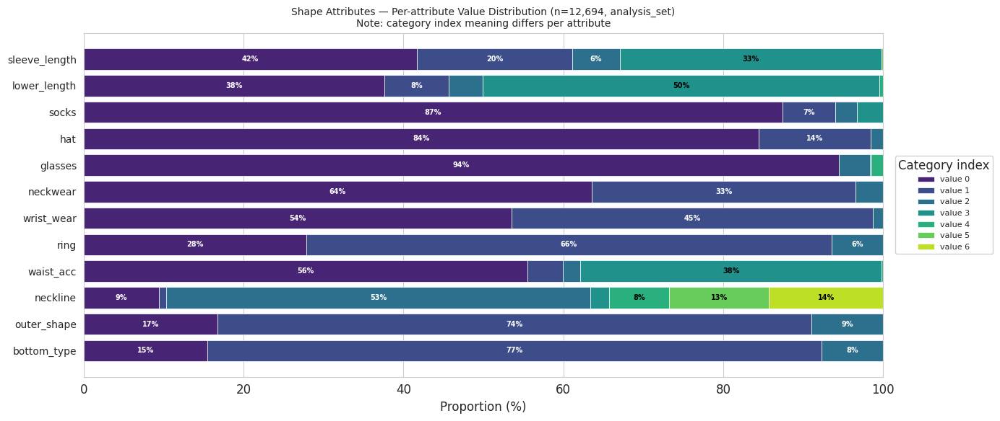
sleeve_length·lower_length·neckline 등은 다양한 카테고리에 분포되지만 socks·hat·glasses·ring은 한 값이 90% 이상 차지하는 극단 불균형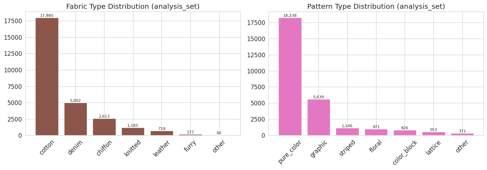
cotton이 압도적 다수, Pattern은 pure_color가 압도적 다수. 두 축 모두 long-tail 구조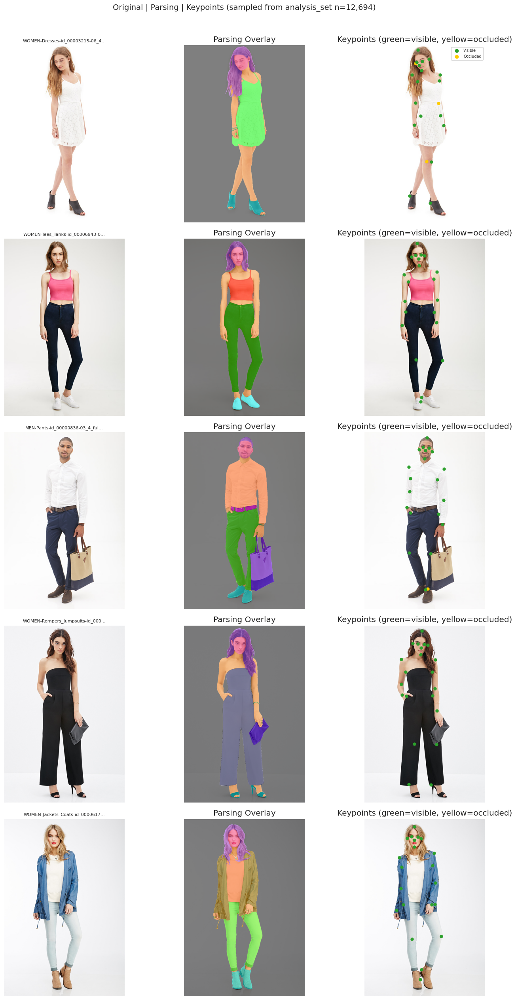
pure_color·Fabric cotton 압도, navel/ring 같은 일부 Shape attribute는 매우 드뭄| 단계 | 입력 | 출력 |
|---|---|---|
| 1. 파싱 마스크 수집 | segm/*_segm.png | {filename: path} 12,701개 |
| 2. 키포인트 병합 | keypoints_loc.txt + keypoints_vis.txt | {filename: [21, 3]} 12,702개 |
| 3. 26-dim 속성 인코딩 | shape / fabric / pattern .txt 3개 | {filename: [26]} binary 12,694개 |
| 4. 4-modality 매칭 검증 | 이미지 ∩ 파싱 ∩ 키포인트 ∩ 속성 | sorted list 12,694장 |
| 5. 70/15/15 split (seed=42) | 12,694장 | train 8,886 / val 1,904 / test 1,904 |
| 슬라이스 | 차원 | 인코딩 |
|---|---|---|
[0:12] Shape | 12 | 각 column 값 ≠ 0 (NA 아님) → 1 |
[12:19] Fabric | 7 | upper / lower / outer 3 position 중 하나라도 해당 카테고리 → 1, NA(7) 제외 |
[19:26] Pattern | 7 | Fabric과 동일 규약 |
| 변환 | image | mask | keypoint |
|---|---|---|---|
| Resize | BILINEAR | NEAREST 필수 | 좌표 스케일 |
| HorizontalFlip (p=0.5) | flip | flip + class swap 3쌍 | x좌표 반전 + 인덱스 swap 9쌍 |
| ColorJitter | 적용 | — | — |
| ImageNet Normalize | 적용 | — | — |
Image [B, 3, 512, 384] → Backbone → feat [B, C, h, w] (SegFormer: C=512, DeepLab: C=2048) ├─ ParsingHead Conv-BN-ReLU×2 + bilinear upsample → 1×1 Conv → [B, 24, H, W] ├─ KeypointHead GAP → FC(C,512) → ReLU → Dropout(0.3) → FC(512, 63) → [B, 21, 3] └─ AttributeHead GAP → Dropout(0.3) → FC(C,512) → ReLU → FC(512, 26)
L_total = 1.0 × L_parse + 0.1 × L_kp + 0.5 × L_attr
CrossEntropyLoss, pred/target spatial 다르면 F.interpolateMSELoss(reduction='none') on (x, y), visibility==2 (missing)만 마스킹 제외BCEWithLogitsLoss→ 멀티태스크 학습에서는 3개 loss를 더해 하나의 총 loss로 만든 뒤 한 번에 backward한다.
| Loss | 다루는 값 | 학습 초기 크기 |
|---|---|---|
| Keypoint MSE | 좌표 (픽셀 단위, 0~500) | ~ 24,000 |
| Parsing CE | 클래스 확률 | ~ 0.3 |
| Attribute BCE | 0/1 확률 | ~ 0.7 |
keypoint loss가 다른 두 loss보다 약 3~8만 배 크므로 keypoint에 0.1을 곱해 다른 loss들과 비슷한 크기로 맞춰서 3개 task가 균형 있게 학습되도록 했다
| Phase | 모델 | 목적 | lr (backbone) | Epochs | λ_parse / λ_kp / λ_attr |
|---|---|---|---|---|---|
| Phase 1 | SegFormer | Parsing-only baseline (Single vs Multi 비교용) | 1e-4 | 20 | 1.0 / 0.0 / 0.0 |
| Phase 2 | SegFormer | 메인 결과물 (3-task 통합, Phase 1 backbone 재활용) | 5e-5 | 50 | 1.0 / 0.1 / 0.5 |
| Phase 3 | DeepLab | CNN vs Transformer 비교 (Phase 2과 동일 hyperparameter) | 5e-5 | 50 | 1.0 / 0.1 / 0.5 |
Phase 1에서는 Baseline 모델을 만들기 위해 Single Task로 keypoint와 attribute의 loss 가중치(λ)를 0으로 두고 Parsing 하나만 학습했고, Phase 2에서 Phhase 1의 backbone을 이어받아 3-task 학습했다.
| Optimizer | AdamW (backbone lr 5e-5, head lr 5e-4, weight_decay 0.01) |
| Scheduler | LinearWarmup(5ep, start_factor=0.1) + CosineAnnealingLR(eta_min=1e-6) |
| EarlyStopping | patience 7, mode='max', monitor combined = 0.4·mIoU + 0.4·PCK + 0.2·F1 |
| Augmentation (train) | HorizontalFlip(좌/우 swap) + ColorJitter(이미지만) + ImageNet Normalize |
| Augmentation (val/test) | Resize + ToTensor + ImageNet Normalize (deterministic) |
| 공통 하이퍼파라미터 | batch_size 16, image 512×384, grad clip 1.0, seed 42 |
| GPU | 단일 H100 80GB |
Phase 3는 Phase 2과 백본 외 모든 변수를 통제해 성능 차이를 오직 백본 아키텍처 효과로만 해석 가능하게 했다.
| Metric | Phase 1 (Baseline, Single Parsing) | Phase 2 (SegFormer) | Phase 3 (DeepLab) |
|---|---|---|---|
| best epoch (combined) | 19 | 48 | 46 |
| Parsing mIoU | 0.6236 | 0.5380 | 0.3394 |
| Keypoint PCK@0.2 | (N/A — λ_kp=0) | 0.8194 | 0.6112 |
| Attribute F1 (macro) | (N/A — λ_attr=0) | 0.3986 | 0.3195 |
| combined | 0.3093 | 0.6227 | 0.4441 |
| Pixel Accuracy | 0.9806 | 0.9702 | 0.9440 |
| 학습 시간 (H100 단일) | 55m 43s | 2h 18m 38s | 6h 1m 19s |
| 메트릭 | 목표 | Phase 1 | Phase 2 | Phase 3 |
|---|---|---|---|---|
| Parsing mIoU | ≥ 0.50 | ✅ +0.124 | ✅ +0.038 | ❌ −0.161 |
| Keypoint PCK@0.2 | ≥ 0.70 | (N/A) | ✅ +0.119 | ❌ −0.089 |
| Attribute F1 (macro) | ≥ 0.60 | (N/A) | ❌ −0.201 | ❌ −0.281 |
Phase 2의 모델은 3개 중 2개의 기준을 통과했다. Phase2에서 F1 수치는 소수 카테고리가 F1=0으로 끌어내린 결과로 해석할 수 있다.
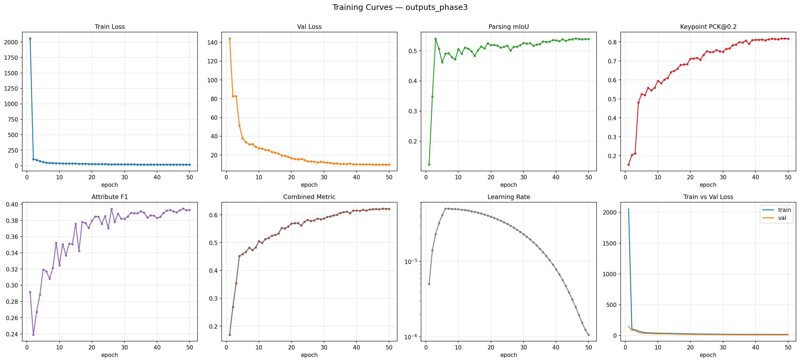
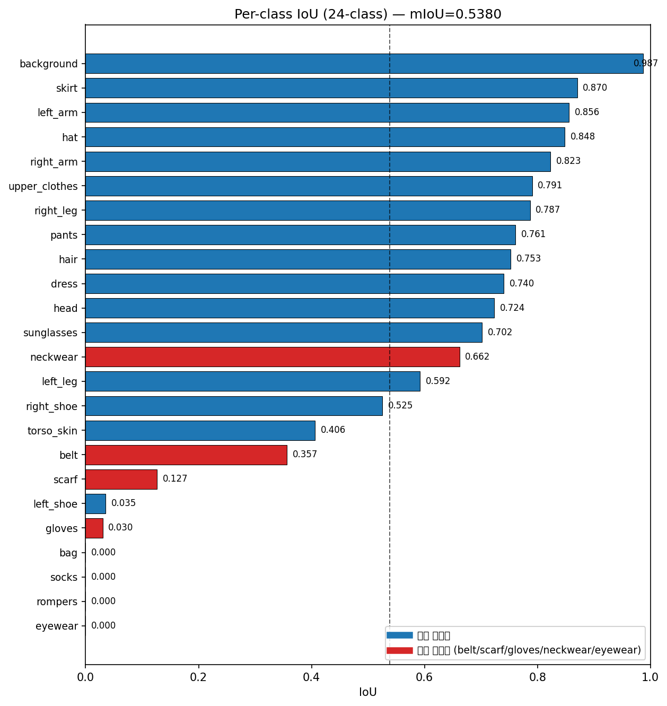
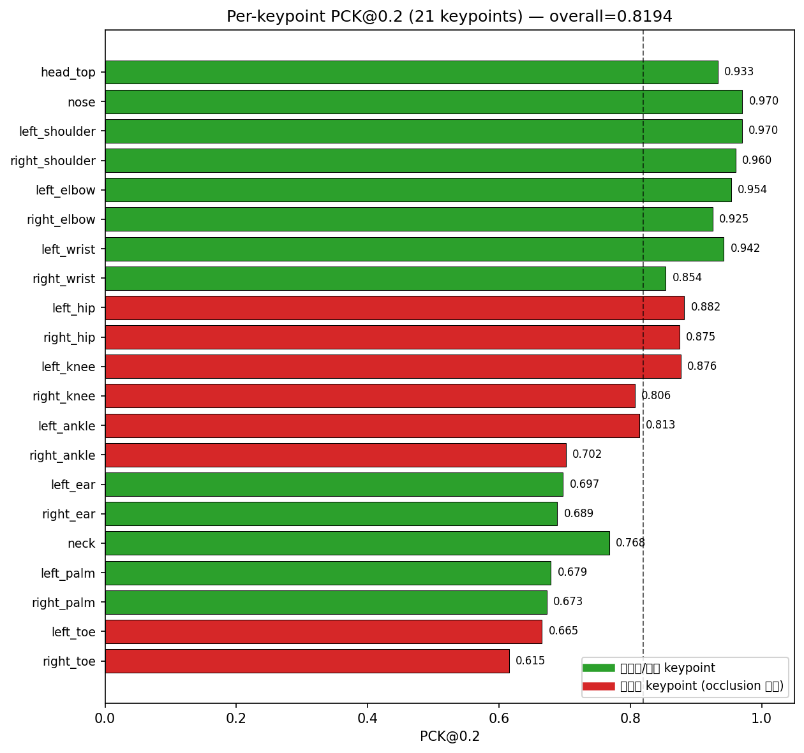
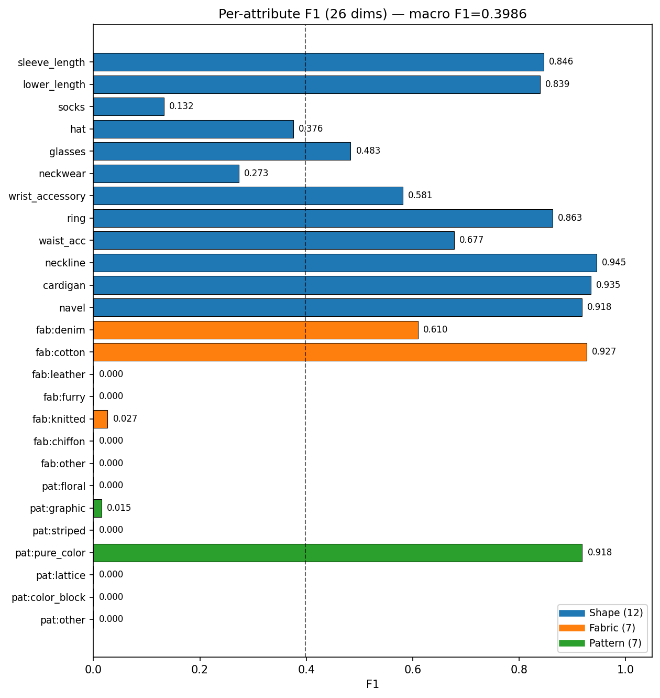
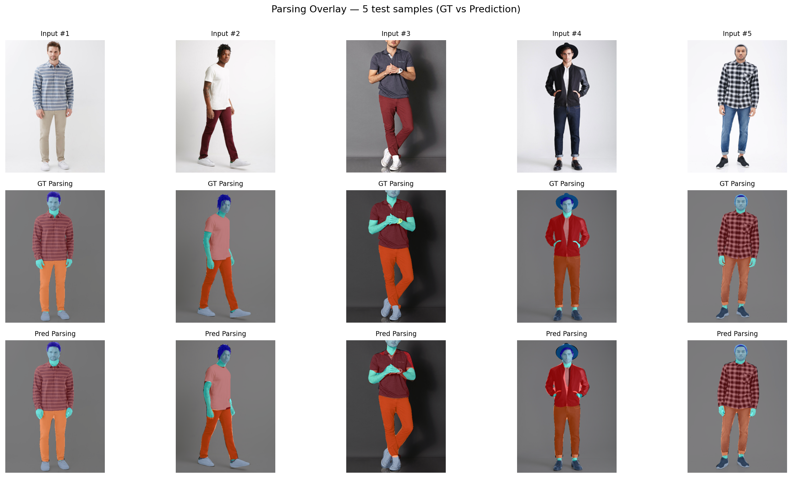
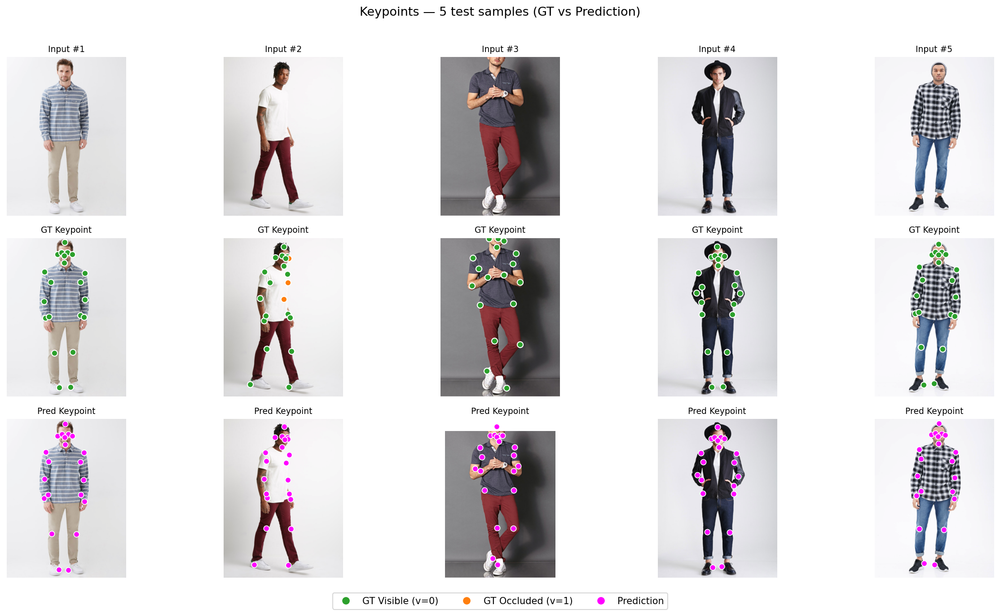
| 클래스 | IoU | EDA 픽셀 비율 |
|---|---|---|
| bag / socks / rompers / eyewear | 0.0000 × 4개 | < 0.05% |
| gloves / left_shoe | 0.03 | 0.00~0.01% |
| scarf | 0.13 | 0.03% |
| background / skirt / left_arm | 0.99 / 0.87 / 0.86 | 77% / 3.7% / 0.8% |
전체 파싱된 픽셀 중 < 0.05%를 차지하는 소수 클래스 4개만으로 mIoU가 −0.167 떨어졌다 mIoU 0.54로 나온 직접적인 원인은 데이터 long-tail으로 파악했다. 같은 패턴으로 Attribute F1=0.40 미달의 원인또한 9개의 Fabric/Pattern 카테고리가 F1=0이 되어 평균을 크게 끌어내렸다.
| 부위 | 예시 keypoint | PCK | 이유 |
|---|---|---|---|
| 상반신 | 어깨 / 팔꿈치 / 코 | 0.95+ | 거의 항상 잘 보임 |
| 하반신 발끝 | toe | 0.62 | 드레스·치마에 가려지는 경우 많음 |
| 귀 | ear | 0.7 근처 | 머리카락에 가려짐 |
같은 backbone에 같은 학습 조건으로 Single-task vs 3-tasks 결과표 :
| Phase 1 (parsing 단독) | Phase 2 (3-task 동시) | Δ | |
|---|---|---|---|
| Parsing mIoU | 0.6236 | 0.5380 | −0.086 ↓ |
| Pixel Accuracy | 0.9806 | 0.9702 | −0.010 |
Phase 2 첫 epoch에서 mIoU가 0.62 → 0.12로 급락 → 50 epoch 학습해도 0.62를 회복 못 했다. keypoint loss의 크기가 워낙 커 모델이 parsing보다 keypoint 쪽으로 학습 방향이 기울어졌다.
→ 여러 task가 같은 backbone을 두고 서로 다른 방향으로 학습을 끌어당기는 negative transfer(부정적 전이)가 발생했다.
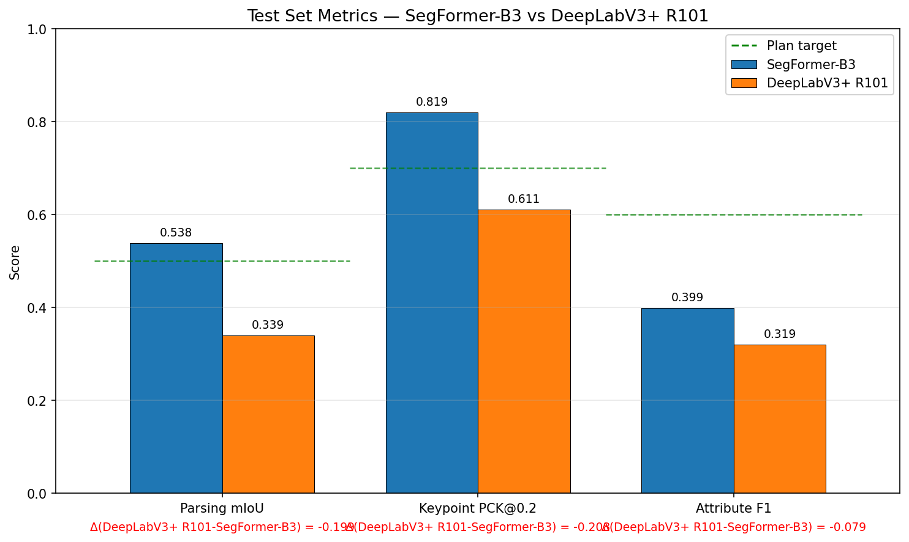
| Metric | SegFormer-B3 | DeepLab R101 | Δ | Winner |
|---|---|---|---|---|
| Parsing mIoU | 0.5380 | 0.3394 | −0.199 | SegFormer |
| Keypoint PCK@0.2 | 0.8194 | 0.6112 | −0.208 (최대) | SegFormer |
| Attribute F1 (macro) | 0.3986 | 0.3195 | −0.079 (최소) | SegFormer |
| combined | 0.6227 | 0.4441 | −0.179 | SegFormer |
| Pixel Accuracy | 0.9702 | 0.9440 | −0.026 | SegFormer |
| 학습 시간 (50 epoch) | 2h 18m | 6h 1m | × 2.6 | SegFormer |
| Total params | 46.1M | 49.7M | +7.8% | SegFormer (작음) |
| 8 / 8 metric 모두 SegFormer 우위 + 학습 속도 2.6배 빠름 | ||||
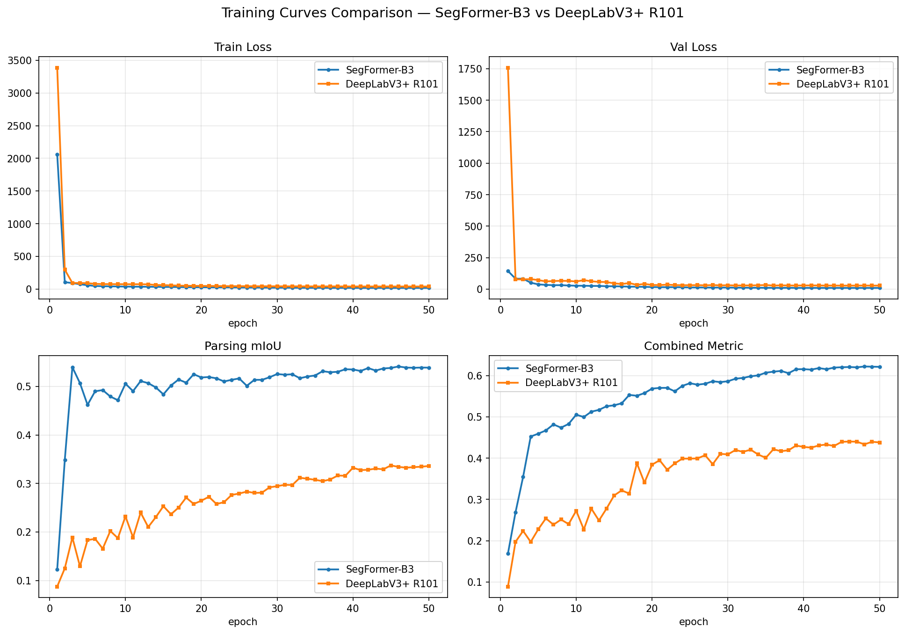
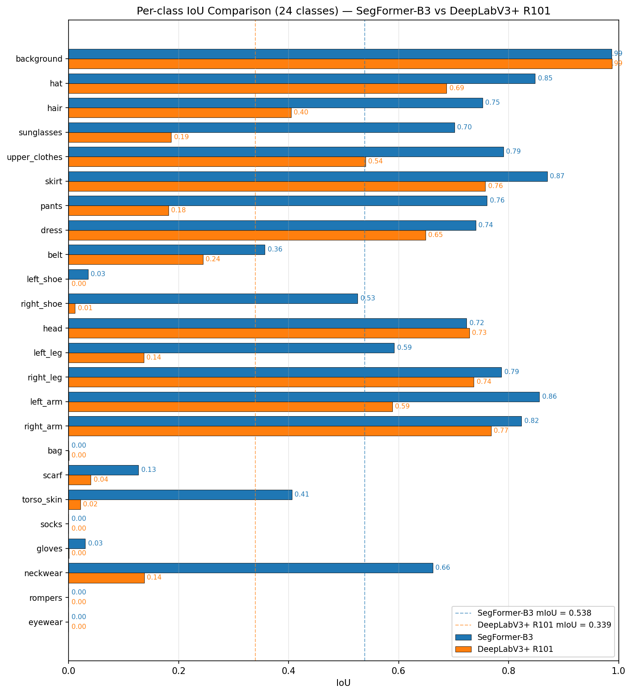
SegFormer 모델이 8개 metric 전부 우위 + 학습 속도 2.6배 + 모델 크기도 더 작다.
P1에서는 EfficientNet과 ViT가 사실상 동률이었던 것과 정반대로, P2에서는 픽셀 단위 예측을 여러 task로 동시에 푸는 환경에서는 백본 선택이 결과를 크게 좌우한다는 점을 정량적으로 확인했다.
특히 두 모델에서 PCK 격차가 가장 크게 나타난 것은, 이미지 전체를 한 번에 보는 구조인 Transformer가 CNN보다 keypoint 예측 같은 위치 정보에서 유리하다는 것을 확인시켜준다.
또한 소수 클래스에서는 두 모델의 차이가 없는 것으로, 모델 아키텍처보다는 데이터 자체의 한계가 더 결정적이라는 점도 알 수 있다.
use_safetensors=True 옵션을 사용했다.0.4·mIoU + 0.4·PCK + 0.2·F1로 가중 평균한 값을 기준으로 사용했다.